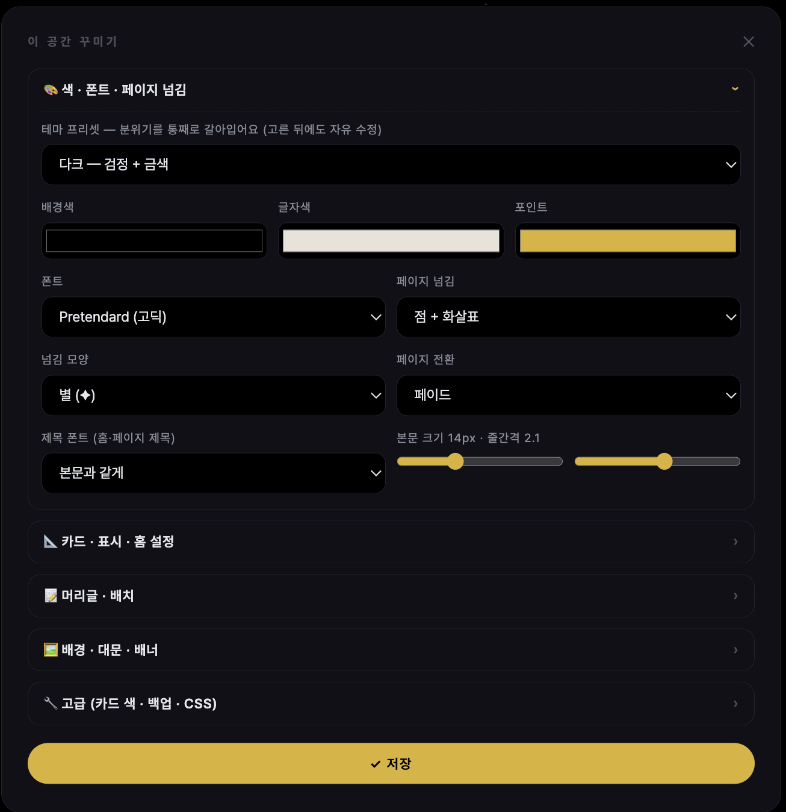

러브인포 · 꾸미기
꾸미기
- 색 · 폰트
- 프리셋 10종 + 색 3종 · 폰트 · 제목 폰트 · 본문 크기/줄간격.
- 카드
- 모서리 · 투명도 · 테두리(점선·이중선·그림자·장식) · 안 여백. 블록마다 개별 지정도 가능(이 블록 디자인).
- 머리글
- 글 / 이미지+글 / 이미지만 / 없음. 이미지는 1200×400 비율 권장, 위치·확대·높이 조절. 이미지 없는 자리는 방문자에게 안 보여요. 밑줄 장식(—)은 끌 수 있어요.
- 배경
- 이미지 + 덮는 정도(0~96%), 배경 효과(눈·별·꽃잎·노이즈·비네팅), 커서 효과(별 꼬리·반짝임·원·물방울).
- 넘김·전환
- 페이지 넘김 모양과 전환 효과. 페이지 참고.
- 대문
- 대문 참고.
- 맨 아래 표시
- 하트 · 링크 복사 · 가이드 · 문의 · 날짜 · 방문자 수를 켜고 끕니다. 방문자 수는 기본 꺼짐.
- 직접 CSS
- 아는 사람용. 화면이 깨지면 주소 뒤에
?nocss=1을 붙여 들어와 지우세요. - 러브로그에서 가져오기
- 러브로그 핸들을 넣으면 색·폰트·머리글·파비콘·배경·대문을 가져와요(비밀번호 제외).
- 고급
- 백업·복원·주소 변경·홈 초기화·삭제. 백업·이사 참고.

사진 자리img/li-design.png